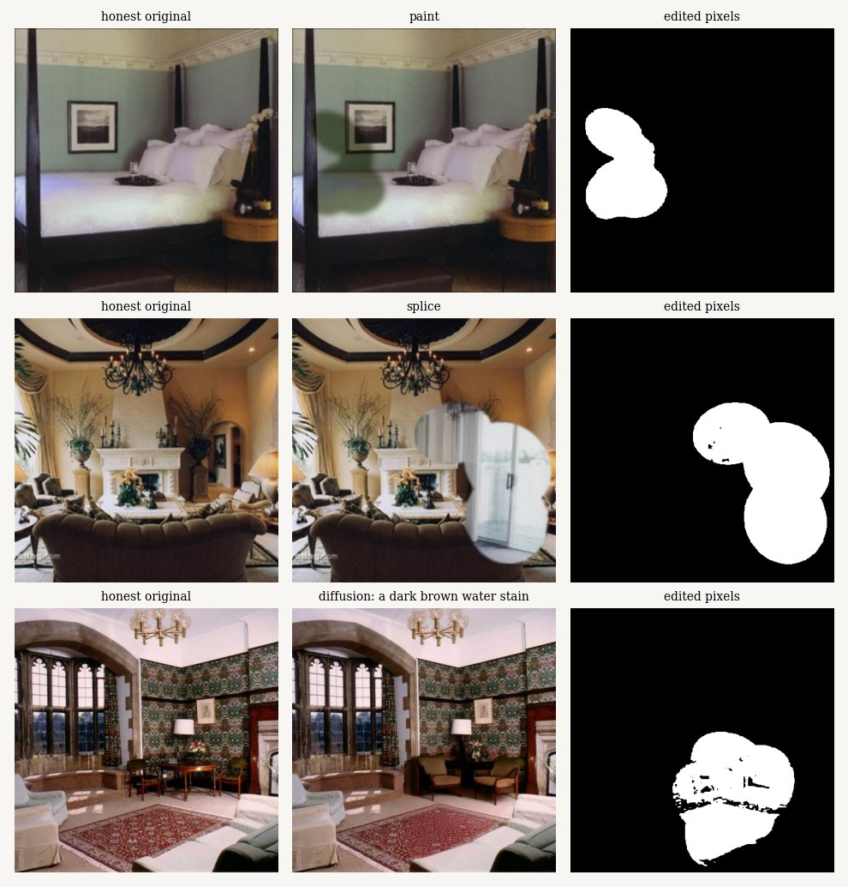
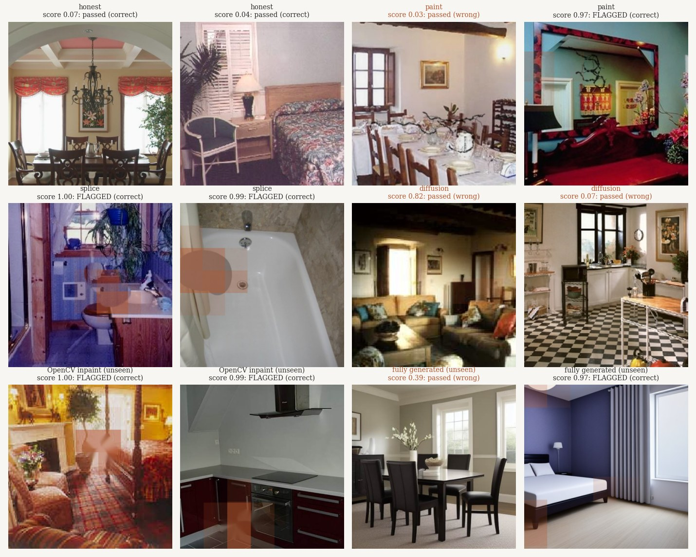

Spotting doctored photos in short-term rental damage claims, and showing the reviewer exactly where to look.
3,716
photos in a dataset built for this project
0.91
AUC on fully AI-generated rooms it never trained on
89%
of pasted-in damage caught on the test set
8.5%
of honest photos wrongly flagged: the main weakness
Inside
1 · The problem 2 · The idea 3 · Key terms
4 · The dataset 5 · The detector 6 · Results
7 · Where it fails 8 · Run it yourself 9 · Credits
Ch Kaushik · 2026
github.com/Kaushik-verse/truvix
Code under the MIT License. Example photos for research and education only.
1 · The problem
A photo used to be proof. Now it takes ten seconds to fake.
When a guest checks out of a holiday rental and the host says something was broken, the platform usually decides who pays by looking at photos. Phone apps that remove, add or repaint objects are now free, and the people judging these photos have a few minutes per case.
October 2026, Australia
A guest was billed about AU$1,700 for a "flooded bathroom". People who looked closely at the host's photo noticed water that didn't splash, dry toilet paper sitting in the flood, and reportedly a SynthID marker, the invisible tag some Google AI tools add to images they make. The claim was rejected after the guest asked about it publicly.
Source: Your Mileage May Vary, 21 Oct 2026
August 2025, London and New York
A host claimed about £12,000 of damage, backed by photos of a cracked coffee table. The guest said the pictures had been edited. The platform first ordered her to pay part of it, and refunded her in full only after she appealed and the story reached the press.
Source: The Guardian, 2 Aug 2025; AI Incident Database #1161
"62 percent of Americans believe AI-generated content is making scams more convincing and harder to spot." Airbnb Newsroom, summer travel scams advisory, 17 June 2026
Why this is hard to catch
Classic photo forensics looked for traces such as uneven JPEG compression or sensor noise that suddenly changes. A photo that has been downscaled and re-sent through a chat app loses most of those traces. That is exactly how claim photos travel, and it is why the two classic methods tested in this project score about the same as a coin flip.
Truvix · the problem2
2 · The idea
Don't decide the claim. Point at the pixels.
Truvix takes one claim photo and returns two things: a score that says how likely it is that part of the photo was edited, and a heatmap that shades the area it is suspicious of. A person still makes the decision. The tool decides where they should look first.
What makes it different
Its own dataset. No public set of "fake damage on rental rooms" exists, so the project builds one: real room photos, each with an honest copy and a copy with damage added in three different ways.
It says where, not only whether. A heatmap is something a reviewer can check in two seconds. A bare score asks them to trust a black box.
Tested on attacks it never saw. Two kinds of fakes appear only at test time, to measure whether it learned "editing" or only the three tools it trained on.
Honest numbers. Every result comes from rooms the model never saw, with error bars and a page on where it fails.
What it is not
It is not a judge. One wrong flag can mean an honest host or guest is accused, so the output is a reason to look closer, never a reason to reject a claim on its own.
Who it is for
Trust-and-safety and claims teams at rental, insurance and marketplace platforms.
Students and engineers who want a complete, small example of image forensics: data, model, evaluation and tooling.
Anyone who wants to see how far a free GPU can go on this problem, and where it stops.
Truvix · the idea3
3 · Key terms
The words you will meet, in plain language
You don't need a machine learning background to follow this guide. These are the only terms it uses.
Image forensicsChecking a photo for signs that it was changed after it was taken. Think of a document examiner, but for pixels.
Splice / copy-moveCutting a region out of one photo (or another part of the same photo) and pasting it on top. The oldest trick there is.
InpaintingAsking software to fill in part of a picture. You paint over an area and the tool invents what should be there. AI inpainting can draw new objects that blend with the lighting.
Diffusion model / Stable DiffusionA type of AI that creates images by starting from noise and cleaning it up step by step, guided by a text prompt such as "a dark water stain". Stable Diffusion 1.5 is a free, widely used one.
Fully generated imageA photo with no real camera picture underneath at all: the whole room was made by the AI from a text prompt.
JPEG compressionThe way most photos are saved: small details are thrown away to make the file smaller. Every re-save throws away a bit more, which also erases evidence.
LaunderingPassing a photo through things that hide edits without meaning to: re-saving, shrinking, screenshotting. Here it is also a training trick (see augmentation).
CNN (convolutional neural network)The standard kind of model for images. It learns its own visual features, such as edges, textures and blur patterns, from examples instead of following hand-written rules.
Backbone, pre-trained, fine-tuningA backbone is a well-known CNN design (ResNet, EfficientNet). Pre-trained means it already learned general vision from a million ImageNet photos. Fine-tuning means teaching it one new task with our own data, which needs far less data and time.
Patch / windowA small 128 by 128 pixel square of the photo. The model judges one patch at a time; sliding it across the photo covers everything.
HeatmapAn overlay that colours each part of the photo by how suspicious its patches were. In this project, terracotta means "probably edited".
Score and thresholdThe score is a number from 0 to 1 for the whole photo. The threshold is the cut-off above which a photo is sent for review. Moving it trades missed fakes against false alarms.
AugmentationMaking extra training examples by changing existing ones in harmless ways (flips, rotations, re-saving), so the model learns what doesn't matter.
OverfittingWhen a model memorises its training photos instead of learning the general pattern. It looks perfect in training and disappoints on new photos.
Truvix · key terms (1 of 2)4
3 · Key terms, continued
How results are measured
Train, validation and test setsThe photos are split three ways. The model learns from train. Choices such as which model to keep and where to put the threshold are made on validation. Test is locked away until the very end and reported as-is. Here the split is by room, so no room appears in two sets.
Held-outData the model never saw while learning. Only held-out numbers say anything about real use.
Caught (true positive rate, recall)Of all the edited photos, the share the tool flagged. 51% caught means about half the fakes were sent for review.
False flag (false positive rate)Of all the honest photos, the share the tool wrongly flagged. This is the number that hurts innocent people, so it is reported next to every result.
BaselineA simple, well-known method to compare against. If a new model can't beat the baseline, it isn't worth its complexity.
Leave-one-family-outTrain the model with one kind of edit removed, then test it on exactly that kind. It measures whether the model would catch a new editing tool tomorrow.
Localisation (pixel F1)How well the heatmap overlaps the area that was really edited, from 0 (no overlap) to 1 (perfect outline).
ROC-AUC (or just AUC)The headline number in this guide. Pick one edited photo and one honest photo at random. AUC is the chance that the detector gives the edited one the higher score.
95% confidence intervalThe range the true value probably lies in, given that the test set is finite. "0.76 [0.73 to 0.80]" means a different random test set would very likely land in that range. It is computed here with the bootstrap: re-drawing the test set 1,000 times.
Operating pointThe chosen threshold. Truvix sets it on validation so that at most 5% of honest photos are flagged, then freezes it before looking at test.
ELA and SRMTwo classic forensic tests used as baselines. ELA (error level analysis) re-saves the photo and looks for areas that change differently. SRM looks at fine-grained sensor noise. Both work on fresh photos and struggle once a photo has been recompressed.
Colab and T4Google Colab runs Python notebooks in the browser. Its free tier lends you an NVIDIA T4 graphics card, which is what made the Stable Diffusion step practical.
Truvix · key terms (2 of 2)5
4 · The dataset
Building fake damage, on purpose, to learn what it looks like
A detector can only learn from examples. There is no public collection of doctored rental-damage photos, so Truvix makes its own from real room photos, with the answer key (which pixels changed) recorded for every image.
Three design rules that keep the test fair
Same room, both labels. Every room appears once honest and once edited, so the model can't learn "kitchens are fake".
Split by room. A room used in testing was never seen in training, not even in its honest form.
Same delivery for everyone. Honest and edited copies are shrunk and re-saved in exactly the same random ways, the way chat apps treat real claim photos.
The numbers
Set
Honest
Edited
Train
1,158
1,158
Validation
165
165
Test
330
330
Unseen: OpenCV inpaint
–
330
Unseen: fully generated
–
80
Total
3,716 photos
Building it took 32 minutes on a free Colab T4. On the 8 GB MacBook Air the Stable Diffusion step alone would have taken days.
Truvix · the dataset6
4 · The dataset, continued
Three ways to fake damage, two you never train on

Real test examples. Left: the honest photo. Middle: the edited one. Right: the pixels that changed (the answer key). Each row shows the largest edit of its kind, so the change is easy to see.
Test only: OpenCV inpaint
A classic, non-AI fill tool. The model never sees it while training, so it measures whether the model generalises.
Test only: fully generated
80 rooms made entirely by the AI from prompts like "a flooded bathroom with water all over the floor", the same kind of fake as in the Australian case.
Paint
What someone does in a photo editor: dark cracks drawn as branching lines, or brown and grey stains blended softly into a surface. Cheap, common, and often thin, which makes it hard to catch.
Splice
A region copied from elsewhere in the same photo, or from a different room, darkened to look worn and feathered at the edges. The classic cut-and-paste fake.
Diffusion
Stable Diffusion 1.5 repaints a masked area from a prompt such as "a dark brown water stain" or "a hole punched in the wall", which matches the cases in the news. In practice it often swaps objects rather than drawing damage: the bottom example was asked for a stain and re-drew the chairs.
Why every edit must be visible. In the first version many AI edits barely changed anything, so the model was told "this is fake" about photos with no visible change. Now an edit must visibly change at least 0.4% of the image, or it is generated again with a new random seed. Across all 1,653 edits only 47 re-rolls were needed.
Truvix · edit types7
5 · The detector
How the model learns, and how it is chosen fairly
The detector is a small, pre-trained image network that has been taught one question: "were the pixels in this square edited?" Training it took about 40 minutes on the free GPU.
1
Cut photos into overlapping 128 px windows
A window counts as edited if at least a quarter of its pixels changed, and as clean if none did. Windows that only touch the edge of an edit are skipped, so the labels stay unambiguous. Each training round uses every edited window and an equal number of randomly drawn clean windows.
2
Add a laundered copy of every training photo
Each photo gets one extra copy that has been re-saved at low JPEG quality, shrunk, or "screenshotted" (enlarged and slightly blurred). This teaches the model that recompression is not editing, and it halved the false alarms on screenshots compared with the previous version.
3
Train three backbones for 20 rounds each
ResNet-18, ResNet-50 and EfficientNet-B0, all starting from ImageNet knowledge. Flips and rotations add variety. After every round, each model is scored on the validation rooms (whole photos, not windows), and only its best round is kept.
4
Keep the winner, then fix the threshold
EfficientNet-B0 had the best validation score. The threshold is then set so that no more than 5% of honest validation photos are flagged, and frozen. Only now does the test set get used, once.
Validation scores of the three candidates
Why the test set is kept away
If you try ten models and report whichever looked best on the test set, the number flatters you; you have quietly tuned on the exam. Every choice in Truvix (which model, which training round, where the threshold sits) is made on validation. The test set is scored once, at the end, and reported as it came out.
The image score is the score of the single most suspicious window. It's simple and easy to explain. It's also why one odd-looking patch can trip an honest photo, which shows up as false flags.
Truvix · the detector8
6 · Results
What it catches on 660 photos it had never seen
0.76
overall AUC 95% CI 0.73 to 0.80
51%
of edited photos caught at the chosen threshold
8.5%
of honest photos flagged (target was 5%)
0.51
best classic method (ELA); SRM got 0.53
AUC by kind of edit (dashed line = coin flip)
Terracotta bars are AI-made fakes. Percentages are the share caught at the frozen threshold, with 8.5% of honest photos flagged.
How to read this
Cut-and-paste fakes are close to solved. Whole fake rooms are caught well even though the model never trained on one: a fully generated picture has a uniform "AI texture" everywhere, and some of the model's windows pick it up. The hard cases are the small ones: a thin painted crack, or an AI edit that adds one believable object to a real photo.
Stress test: one more trip through an app
Extra step
AUC
Caught
False flags
none
0.76
51%
8.5%
re-saved, JPEG 50
0.74
46%
7.9%
shrunk to half
0.67
19%
2.4%
screenshot
0.75
52%
14.8%
Truvix · results9
6 · Results, continued
Twelve random test photos, warts and all

Two photos of each kind, drawn at random with a fixed seed rather than hand-picked. Terracotta shading is the heatmap. Titles in terracotta are mistakes. 8 of 12 are right, about what the overall numbers predict: pasted regions and OpenCV fills are caught and outlined, both AI inpainting edits slip through, and one honest-looking AI room scores just under the threshold.
Three versions, and what each change bought
v1
v2
v3 (current)
Rooms
942
942
1,653
Fakes trained on
paint, splice
+ AI inpainting
+ visible-change rule, stronger prompts
Model
ResNet-18, 5 rounds
ResNet-18, 5 rounds
3 backbones × 20 rounds, laundering, picked on validation
Overall AUC
0.82*
0.73
0.76
AI inpainting AUC
–
0.59
0.68
Fully generated AUC
–
0.81
0.91
False flags on screenshots
12.8%
29.3%
14.8%
* v1 had no AI edits at all, which is an easier exam, so its number can't be compared directly. Every version's raw results are kept in the repository under results/.
Truvix · results10
7 · Where it fails
The honest part
A detector that only shows its wins can't be trusted, so this page matters as much as the results. Each point below comes straight from the measurements.
Small AI edits get through
Only 28% of AI inpainting edits are caught. Stable Diffusion tends to add a plausible object, such as a jar on a sink or a new tap, rather than damage, and those additions look natural to people too.
Too many false flags
The target was at most 5% of honest photos flagged; the test set gave 8.5%, and screenshots push it to 14.8%. Validation had 165 honest rooms, too few to place the threshold precisely.
It doesn't generalise to new tools
Trained without one kind of edit and tested on it, the model scores 0.54 (paint), 0.64 (splice) and 0.49 (AI inpainting): close to a coin flip. It has learned the tools it saw, not "editing" in general. Its good score on unseen OpenCV fills is most likely because they look like feathered splices.
Small photos break it
Shrink the photo to half size and only 19% of edits are caught. The traces it relies on live in fine detail.
It memorises
Training error falls almost to zero while validation stops improving around 0.8. More variety, especially more and different real photos, would help more than longer training.
Fake damage is not real damage
None of the honest photos show genuinely broken things. In real use, the model could learn "damage means fake". Real, honest damage photos are the most important missing piece.
What would improve it next
Real damage photos in the honest set; an instruction-following image editor that actually draws cracks and stains; smarter photo scores (average of the top few windows instead of the single worst one); and a bigger validation set to set the threshold.
Truvix · limitations11
8 · Run it yourself
From zero to a heatmap on your laptop
The trained model ships with the repository, so checking photos needs no GPU, no dataset and no Colab. Any Mac, Windows or Linux machine with Python 3.10 or newer will do. About 1 GB of disk is needed for the packages.
streamlit run app.py # opens http://localhost:8501 in your browser
Everything is in one place. Try it: click a test photo in the gallery or drop in your own, and see the score gauge, the verdict and the heatmap side by side. How it works and Results explain the project. A separate Developer tools page in the sidebar holds the review threshold, batch checking and a button that runs the tests. Stop the app with Ctrl+C in the terminal.
4
Or use the command line
python scripts/demo.py && open demo_output.png # one sheet with 12 heatmaps
python -m truvix.cli my_claim.jpg --heatmap my_claim_heatmap.png
# {"score": 0.9921, "threshold": 0.9474, "verdict": "REVIEW: likely edited", "flagged_area": 0.06}
python scripts/demo.py --images my_photos/ # a whole folder at once
Above the threshold means "a person should look". flagged_area is the share of the photo the heatmap marks. Photos larger than 1024 px are shrunk first. The model was trained on room photos and works best on them.
5
Rebuild everything from scratch (optional)
Open colab/truvix_colab.ipynb in Google Colab (the "Try it" link in the README opens it directly). Choose Runtime → Change runtime type → T4 GPU, then Run all, and keep the tab open for about 1.5 hours. It downloads the room photos, generates the fakes, trains the three models, evaluates them, and shows the tables and heatmaps inline.
Truvix · run it12
8 · Run it yourself, continued
Showing it to someone in five minutes
1
Start with the story (30 s)
The Australian flood photo and the £12,000 coffee table. Everyone understands "the photo was fake and someone was billed for it".
2
Run the app live (1 min)
streamlit run app.py. Click "Pasted region" and show the heatmap outlining it, then "AI-made room", then upload a photo you edited yourself. Mention that honest photos are sometimes flagged; showing a weakness on purpose builds more trust than a perfect demo.
3
Explain the dataset (1 min)
Honest and edited copy of the same room, identical "delivery", split by room. This is the part most projects get wrong.
4
Show the results page (1 min)
0.91 on fully AI-generated rooms it never trained on; 0.95 on pasted damage; then the weak spots.
5
Close with what you'd do next (30 s)
Real damage photos, better AI edits, smarter scoring. People tend to remember a clear account of the limits longer than the scores.
Questions people often ask: "Why not just use a big model?" (the bigger ResNet-50 memorised more and scored lower), "Would it catch a new AI tool?" (not reliably; see leave-one-family-out), "Can it reject claims?" (no, it only prioritises human review).
Where everything lives
truvix/
├─ app.py the Streamlit app
├─ truvix/the Python package
│ ├─ damage.py paint, splice, diffusion edits
│ ├─ postprocess.py "delivery", laundering
│ ├─ features.py ELA and SRM baselines
│ ├─ patchnet.py CNN, windows, heatmap
│ └─ cli.py check one photo
├─ scripts/
│ ├─ fetch_bases.py download room photos
│ ├─ make_dataset.py build the fakes
│ ├─ train_patchnet.py train one detector
│ ├─ select_model.py pick on validation
│ ├─ evaluate.py all test numbers
│ ├─ make_figures.py results chart
│ └─ demo.py local showcase sheet
├─ colab/the full Colab notebook
├─ models/trained detector + training logs
├─ results/metrics for v1, v2, v3
├─ data/image lists and generation stats
├─ docs/figures, examples, this guide
├─ tests/13 automated checks
├─ README.md · NOTICE.md · LICENSE
└─ CITATION.cff · NEXT_STEPS.md
Fridrich, Kodovsky. Rich Models for Steganalysis of Digital Images. IEEE TIFS 2012.
He et al. Deep Residual Learning for Image Recognition. CVPR 2016. arXiv:1512.03385
Tan, Le. EfficientNet: Rethinking Model Scaling for CNNs. ICML 2019. arXiv:1905.11946
Wang et al. CNN-generated images are surprisingly easy to spot... for now. CVPR 2020. arXiv:1912.11035
Rombach et al. High-Resolution Image Synthesis with Latent Diffusion Models. CVPR 2022. arXiv:2112.10752
Luo et al. LCM-LoRA: A Universal Stable-Diffusion Acceleration Module. 2023. arXiv:2311.05556
Ojha et al. Towards Universal Fake Image Detectors that Generalize Across Generative Models. CVPR 2023. arXiv:2302.10174
Corvi et al. On the Detection of Synthetic Images Generated by Diffusion Models. ICASSP 2023. arXiv:2211.00680
Guillaro et al. TruFor: Trustworthy Image Forgery Detection and Localization. CVPR 2023. arXiv:2212.10957
Zhu et al. GenImage: A Million-Scale Benchmark for Detecting AI-Generated Images. NeurIPS 2023. arXiv:2306.08571
News sources
Your Mileage May Vary, "Airbnb AI damage claim", 21 Oct 2026.
The Guardian, Airbnb guest damage claim refunded, 2 Aug 2025.
AI Incident Database, incident 1161.
Airbnb Newsroom, summer travel scams advisory (US), 17 Jun 2026.
github.com/Kaushik-verse/truvix
Questions, takedown requests or ideas: open an issue on the repository. If you build on this work, please cite it with the "Cite this repository" button and cite the papers above.